Licencirani treneri TSS
 O nama
O nama
Tenis se vratio na Banovo Brdo
Tereni iz devedesetih, deset godina zarasli u korov, danas su tri šljakasta terena pod reflektorima. Obnovili su ih treneri koji su na njima nekad i radili.
Rezerviši teren- 3 Šljakasta terena
- Do 23h Pod reflektorima
- 2025 Godina obnove
Član
saveza
TSS
TSB
Naša priča
Klub su 2024. osnovali teniski treneri
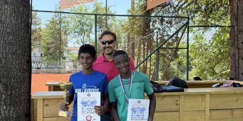
i profesori škole iz komšiluka, ljudi koji su na ovim terenima nekad i radili. Tereni iz devedesetih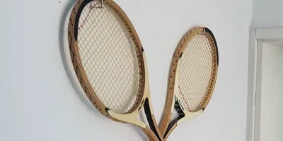
stajali su prazni od 2016. i skoro deset godina bili zarasli u korov. Obnova je krenula početkom 2025. Od 1. maja na šljaci se ponovo trenira, igra i druži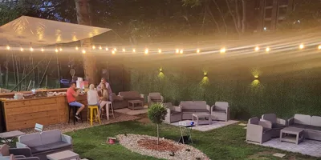
do 23h.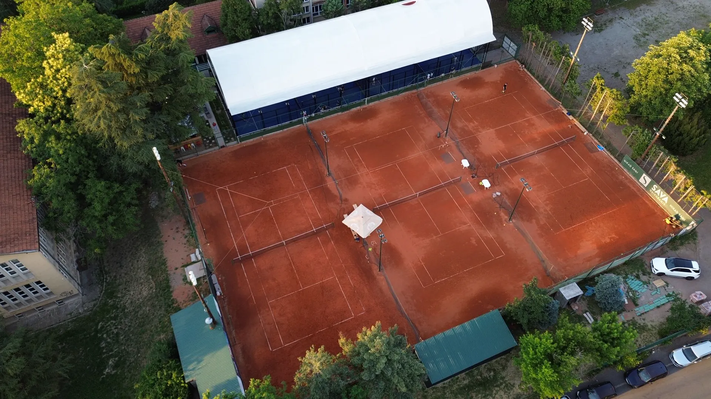
Klub danas
Član smo Teniskog saveza Srbije i Teniskog saveza Beograda. Organizujemo turnire svih kategorija i letnje kampove za decu svih nivoa igre, a tereni rade cele godine: leti napolju, zimi pod balonom.
Upiši dete u školu-
7
Trenera
Licencirani treneri TSS, takmičarska sekcija i kondicioni trener.
-
4
Programa
Škola tenisa, takmičarske grupe, individualni rad i kondicioni treninzi.
-
12
Meseci u godini
Leti se igra napolju, zimi pod balonom. Sezona ne staje.
-
1. maj
Ponovo otvoren
Prva lopta na obnovljenoj šljaci pala je 1. maja 2025. godine.
 Zašto Mladost
Zašto Mladost
Svaki igrač dobija svoj plan
i trenera koji ga vodi
Od škole tenisa do takmičara
Grupe po nivou
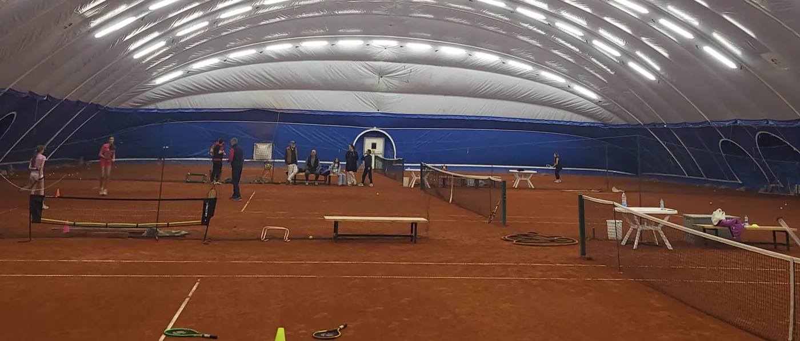
Plan i program za svakog
Individualni rad sa trenerom na svim nivoima, kondicioni treninzi i škola tenisa od najmlađih do rekreativaca.
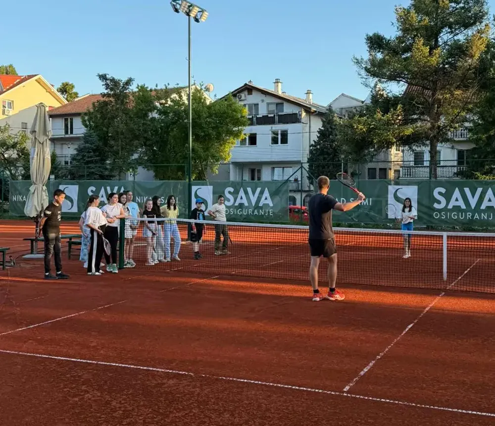
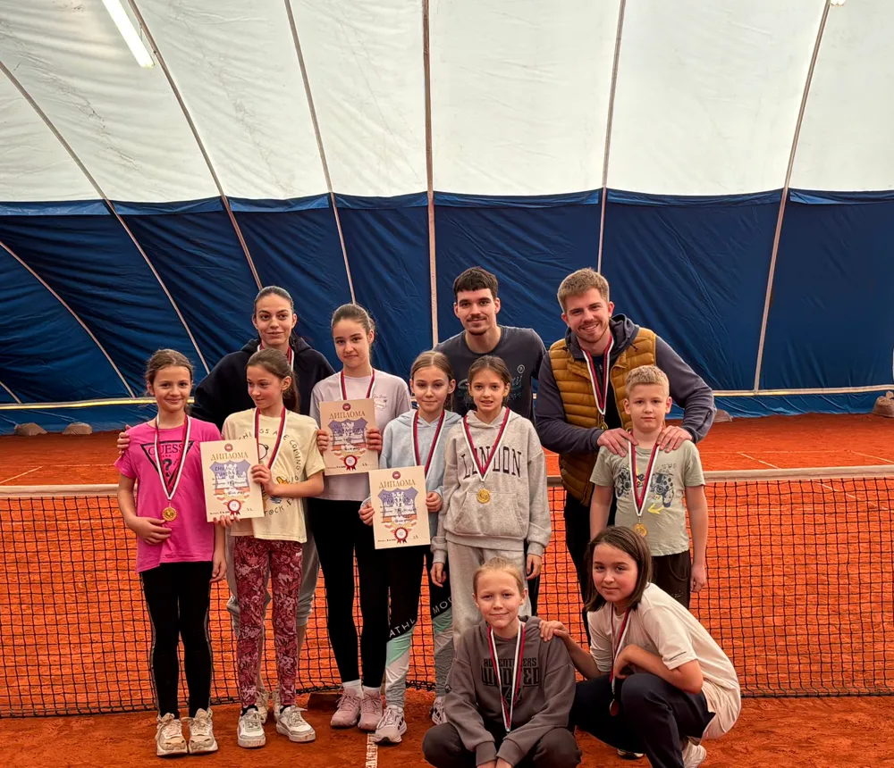
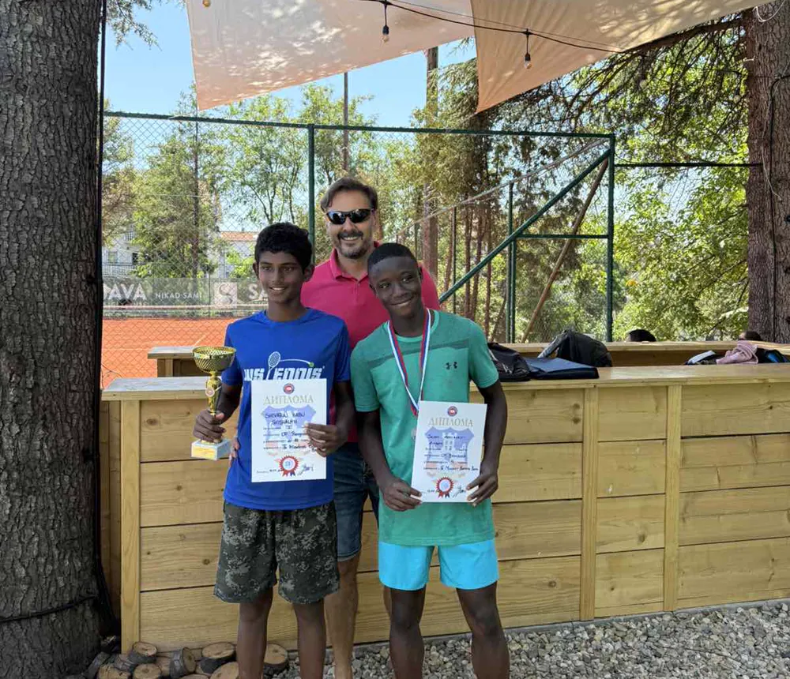
 Obnova kluba
Obnova kluba
Obnovljen od temelja
napravljen za igru
Tereni
Novi šljakasti tereni napravljeni su tačno na mestu nekadašnjih. Reflektori drže teren osvetljen do 23h, a zimi tereni idu pod balon, pa se igra preko cele godine.
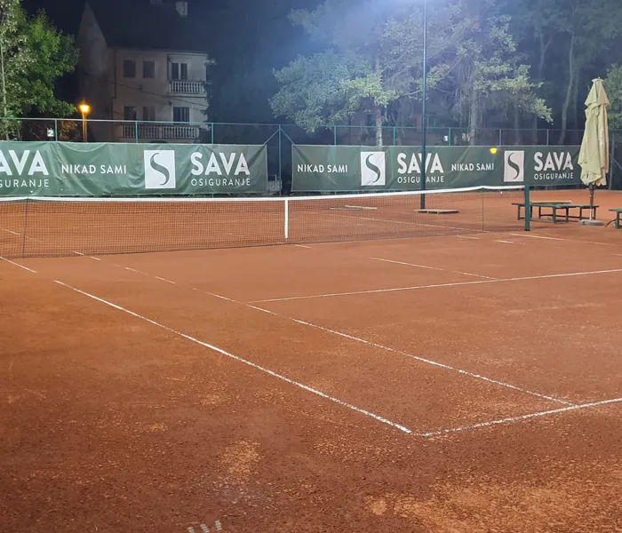
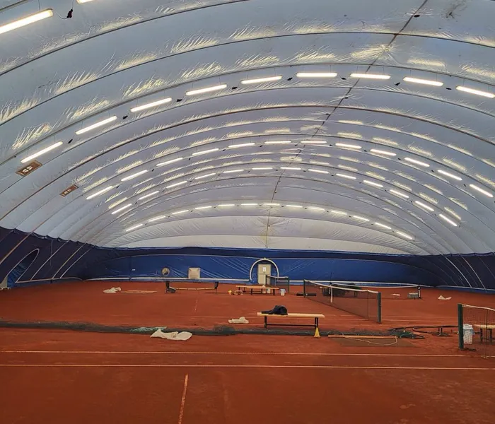
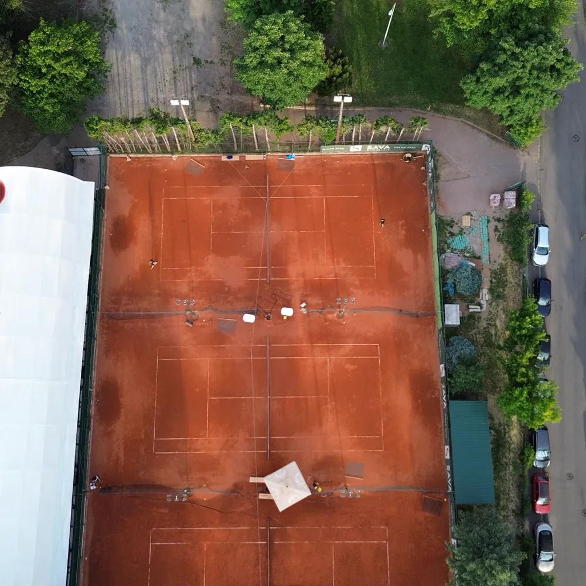
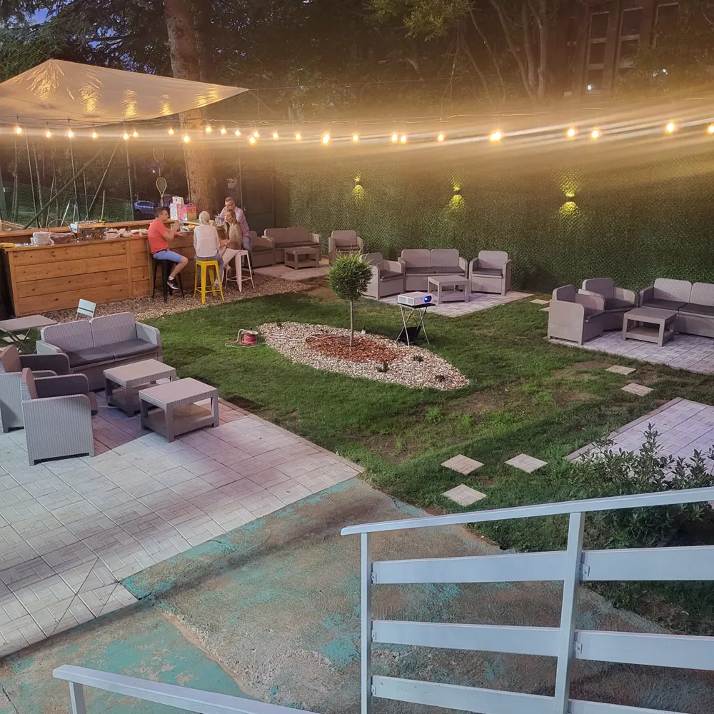
Bašta i klupska kuća
Potpuno nova bašta i prostor za uživanje u letnjim večerima, posle meča ili dok dete trenira. Klupska kuća je renovirana od temelja, a tuš kabine su nove.
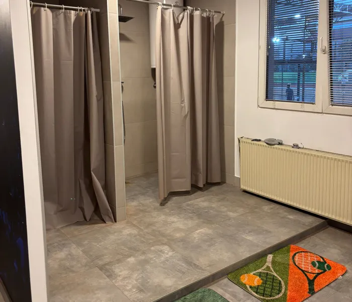
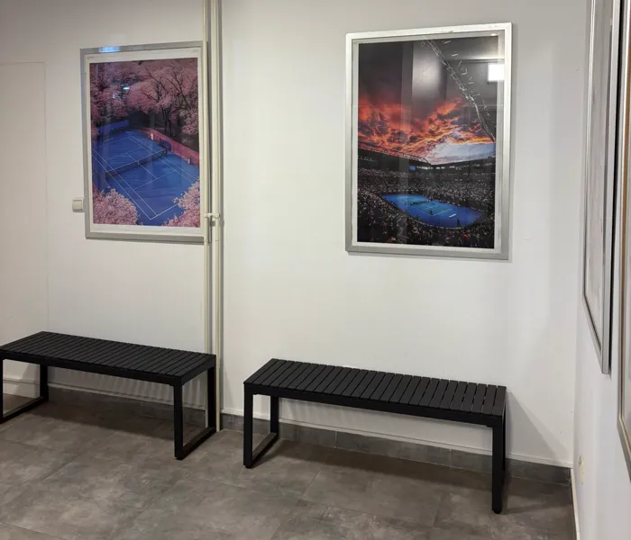
Upoznaj ljude
iza svakog treninga.
Licencirani treneri TSS za školu tenisa i rekreaciju, takmičarska sekcija i kondicioni trener. Od prvog reketa do prvog turnira.
Naši treneri